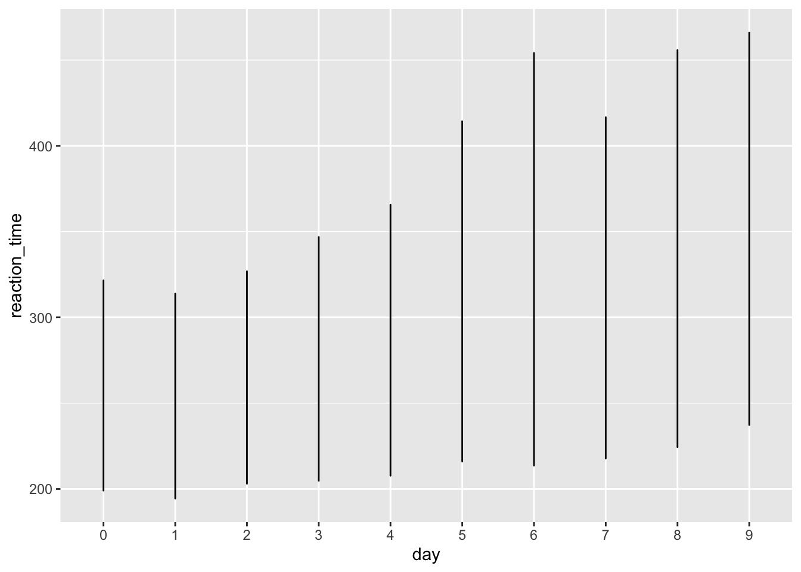
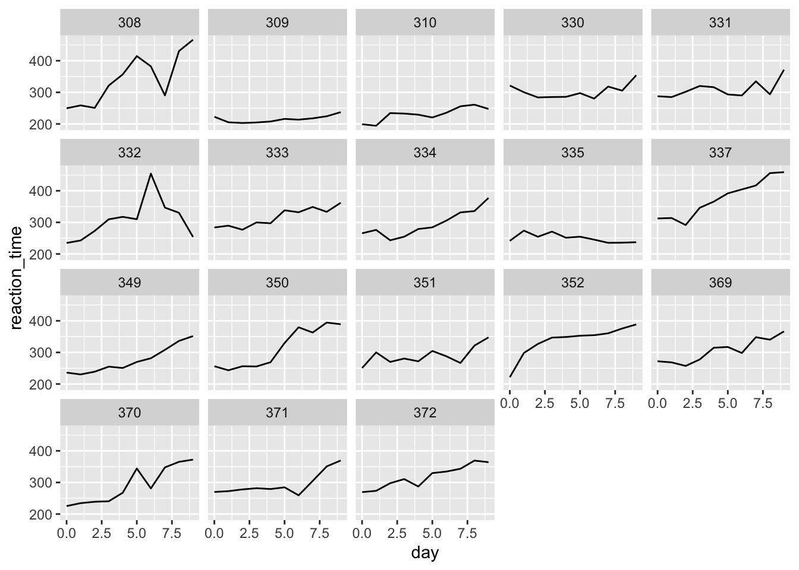
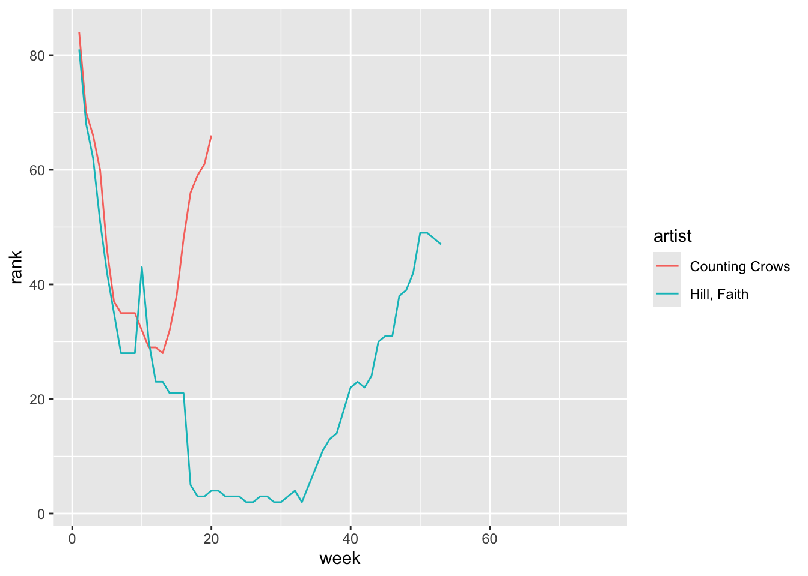

Rows: 344 Columns: 8
── Column specification ────────────────────────────────────────────────────────
Delimiter: ","
chr (3): species, island, sex
dbl (5): bill_length_mm, bill_depth_mm, flipper_length_mm, body_mass_g, year
ℹ Use `spec()` to retrieve the full column specification for this data.
ℹ Specify the column types or set `show_col_types = FALSE` to quiet this message.
Tally up the number of male/female penguins by species in 2 ways:
# Using count()penguins |>count(species, sex)
# A tibble: 8 × 3
species sex n
<chr> <chr> <int>
1 Adelie female 73
2 Adelie male 73
3 Adelie <NA> 6
4 Chinstrap female 34
5 Chinstrap male 34
6 Gentoo female 58
7 Gentoo male 61
8 Gentoo <NA> 5
# Using group_by() and summarize()penguins |>group_by(species, sex) |>summarise(n())
`summarise()` has grouped output by 'species'. You can override using the
`.groups` argument.
# A tibble: 8 × 3
# Groups: species [3]
species sex `n()`
<chr> <chr> <int>
1 Adelie female 73
2 Adelie male 73
3 Adelie <NA> 6
4 Chinstrap female 34
5 Chinstrap male 34
6 Gentoo female 58
7 Gentoo male 61
8 Gentoo <NA> 5
Define a new column that includes the proportion or relative frequencies of male/female penguins in each species.
We can’t do this by adjusting our count() code, but can adjust the group_by() and summarize() code since it’s still tracking the group categories in the background.
Does the order of species and sex in group_by() matter?
`summarise()` has grouped output by 'species'. You can override using the
`.groups` argument.
EXAMPLE 3: units of observation
To get the information on average body masses, we reshaped our original data.
Did the reshaping process change the units of observation?
# Units of observation = 6head(penguins)
# A tibble: 6 × 8
species island bill_length_mm bill_depth_mm flipper_length_mm body_mass_g
<chr> <chr> <dbl> <dbl> <dbl> <dbl>
1 Adelie Torgersen 39.1 18.7 181 3750
2 Adelie Torgersen 39.5 17.4 186 3800
3 Adelie Torgersen 40.3 18 195 3250
4 Adelie Torgersen NA NA NA NA
5 Adelie Torgersen 36.7 19.3 193 3450
6 Adelie Torgersen 39.3 20.6 190 3650
# ℹ 2 more variables: sex <chr>, year <dbl>
# Units of observation = 6head(penguin_avg)
# A tibble: 6 × 3
# Groups: species [3]
species sex avg_body_mass
<chr> <chr> <dbl>
1 Adelie female 3369.
2 Adelie male 4043.
3 Chinstrap female 3527.
4 Chinstrap male 3939.
5 Gentoo female 4680.
6 Gentoo male 5485.
Did the reshaping process result in any information loss from the original data? Yes, we lost the Island, year, and bill data
Reshaping data
There are two general types of reshaped data:
aggregate data
For example, using group_by() with summarize() gains aggregate information about our observations but loses data on individual observations.
raw data, reshaped
We often want to retain all information on individual observations, but need to reshape it in order to perform the task at hand.
EXAMPLE 4: reshape it with your mind
Let’s calculate the difference in average body mass, male vs female, for each species. Since penguin_avg is small, we could do these calculations by hand. But this doesn’t scale up to bigger datasets.
Sketch out (on paper, in your head, anything) how this data would need to be reshaped, without losing any information, in order to calculate the differences in average body mass using our wrangling verbs. Make it as specific as possible, with column labels, entries, correct numbers, etc.
Identify the units of observation.
penguin_avg
# A tibble: 6 × 3
# Groups: species [3]
species sex avg_body_mass
<chr> <chr> <dbl>
1 Adelie female 3369.
2 Adelie male 4043.
3 Chinstrap female 3527.
4 Chinstrap male 3939.
5 Gentoo female 4680.
6 Gentoo male 5485.
Wider vs Longer formats
Making our data longer or wider reshapes the data, changing the units of observation while retaining all raw information:
Make the data longer, i.e. combine values from multiple variables into 1 variable. EXAMPLE: 1999 and 2000 represent two years. We want to combine their results into 1 variable without losing any information.
Make the data wider, i.e. spread out the values across new variables. EXAMPLE: cases and pop represent two categories within type. To compare or combine their count outcomes side-by-side, we can separate them into their own variables.
EXAMPLE 5: pivot wider
Because it’s a small enough dataset to examine all at once, let’s start with our penguin_avg data:
penguin_avg
# A tibble: 6 × 3
# Groups: species [3]
species sex avg_body_mass
<chr> <chr> <dbl>
1 Adelie female 3369.
2 Adelie male 4043.
3 Chinstrap female 3527.
4 Chinstrap male 3939.
5 Gentoo female 4680.
6 Gentoo male 5485.
With the goal of being able to calculate the difference in average body mass, male vs female, for each species, let’s make the dataset wider. That is, let’s get one row per species with separate columns for the average body mass by sex. Put this code into a chunk and run it:
# A tibble: 3 × 3
# Groups: species [3]
species female male
<chr> <dbl> <dbl>
1 Adelie 3369. 4043.
2 Chinstrap 3527. 3939.
3 Gentoo 4680. 5485.
Suppose we wanted to change this data back to a longer format. In general, this happens when some variables (here female and male) represent two categories or values of some broader variable (here sex), and we want to combine them into that 1 variable without losing any information. Let’s pivot_longer():
# We can either communicate which variables we WANT to collect into a single column (female, male)penguin_avg_wide |>pivot_longer(cols =c(female, male), names_to ="sex", values_to ="avg_body_mass")
# A tibble: 6 × 3
# Groups: species [3]
species sex avg_body_mass
<chr> <chr> <dbl>
1 Adelie female 3369.
2 Adelie male 4043.
3 Chinstrap female 3527.
4 Chinstrap male 3939.
5 Gentoo female 4680.
6 Gentoo male 5485.
# Or which variable(s) we do NOT want to collect into a single column (sex)penguin_avg_wide |>pivot_longer(cols =-species, names_to ="sex", values_to ="avg_body_mass")
# A tibble: 6 × 3
# Groups: species [3]
species sex avg_body_mass
<chr> <chr> <dbl>
1 Adelie female 3369.
2 Adelie male 4043.
3 Chinstrap female 3527.
4 Chinstrap male 3939.
5 Gentoo female 4680.
6 Gentoo male 5485.
Pivot Longer
cols = the columns (variables) to collect into a single, new variable. we can also specify what variables we don’t want to collect
names_to = the name of the new variable which will include the names or labels of the collected variables
values_to = the name of the new variable which will include the values of the collected variables
FOLLOW-UP:
What are the units of observation? species and sex
Did we lose any information when we lengthened the data? no
Why did we put the variables in quotes “” here but not when we used pivot_wider()? beacuse we are using the name of the column
EXAMPLE 7: Practice
Let’s make up some data on the orders of 2 different customers at 3 different restaurants:
customer restaurant order
1 A Shish falafel
2 A FrenchMeadow salad
3 A DunnBros coffee
4 B Shish baklava
5 B FrenchMeadow pastry
6 B DunnBros tea
The units of observation in food are customer / restaurant combinations. Wrangle this data so that the units of observation are customers, spreading the restaurants into separate columns.
# A tibble: 6 × 3
customer restaurant order
<chr> <chr> <chr>
1 C Shish coffee
2 C FrenchMeadow soup
3 C DunnBros cookie
4 D Shish maza
5 D FrenchMeadow sandwich
6 D DunnBros coffee
19.1 Exercises
Exercise 1: What’s the problem?
Consider data on a sleep study in which subjects received only 3 hours of sleep per night. Each day, their reaction time to a stimulus (in ms) was recorded.1
What are the units of observation in sleep_wide? - subjects
Part b
Suppose I ask you to plot each subject’s reaction time (y-axis) vs the number of days of sleep restriction (x-axis). “Sketch” out in words what the first few rows of the data need to look like in order to do this. It might help to think about what you’d need to complete the plotting frame:
ggplot(___, aes(y = ___, x = ___, color = ___))
we would need the days to be the units of observations, so it owuld look like |day_ | subject | performance | 1 | 308 | 249.56
Part c
How can you obtain the dataset you sketched in part b? You would want to use pivot_longer
just using sleep_wide
pivot_longer()
pivot_wider()
Exercise 2: Pivot longer
To plot reaction time by day for each subject, we need to reshape the data into a long format where each row represents a subject/day combination. Specifically, we want a dataset with 3 columns and a first few rows that look something like this:
Subject
day
reaction_time
308
0
249.56
308
1
258.70
308
2
250.80
Part a
Use pivot_longer() to create the long-format dataset above. Show the first 3 lines (head(3)), which should be similar to those above. Follow-up: Thinking forward to plotting reaction time vs day for each subject, what would you like to fix / change about this dataset?
# For cols, try 2 appproaches: using - and starts_with sleep_wide |>pivot_longer(cols =-Subject, names_to ="day", values_to ="reaction_time")
Besides putting each argument on a different line for readability and storing the results, what changed in the code? day_ was removed from the day column
How did this impact how the values are recorded in the day column?
it got rid of the day_ prefix in the vaules of the column
Part c
Using sleep_long, construct a line plot of reaction time vs day for each subject. This will look goofy no matter what you do. Why? HINT: look back at head(sleep_long). What class or type of variables are Subject and day? What do we want them to be? (Subject is integer and day is character but we want subject as a factor and day as a numeric value )
ggplot(sleep_long, aes(x = day, y = reaction_time)) +geom_line()

Exercise 3: Changing variable classes & plotting
Let’s finalize sleep_long by mutating the Subject variable to be a factor (categorical) and the day variable to be numeric (quantitative). Take note of the mutate() code! You’ll use this type of code a lot.
sleep_long <- sleep_wide |>pivot_longer(cols =-Subject,names_to ="day",names_prefix ="day_",values_to ="reaction_time") |>mutate(Subject =as.factor(Subject), day =as.numeric(day))# Check it out# Same data, different classhead(sleep_long)
# Make a line plot of reaction time by day for each subject# Put these all on the same frameggplot(sleep_long, aes(x = day, y = reaction_time, color = Subject)) +geom_line()
# Make a line plot of reaction time by day for each subject# Put these all on separate frames (one per subject)ggplot(sleep_long, aes(x = day, y = reaction_time)) +geom_line() +facet_wrap(~ Subject)

Part b
Summarize what you learned from the plots. For example:
What’s the general relationship between reaction time and sleep? generally the later the day in the study related to slower reaction times
Is this the same for everybody? What differs? No this was not the same for some people it got faster at some points but then when down again and for others it contiunally got slower.
Exercise 4: Pivot wider
Make the data wide again, with each day becoming its own column.
Part a
Adjust the code below. What don’t you like about the column labels?
Load data on songs that hit the billboard charts around the year 2000. Included for each song is the artist name, track name, the date it hit the charts (date.enter), and wk-related variables that indicate rankings in each subsequent week on the charts:
# Load datalibrary(tidyr)data("billboard")# Check it outhead(billboard)
In using this data, you’ll need to determine if and when the data needs to be reshaped for the task at hand.
Part a
Construct and summarize a plot of how a song’s Billboard ranking its 2nd week on the chart (y-axis) is related to its ranking the 1st week on the charts (x-axis). Add a reference line geom_abline(intercept = 0, slope = 1). Songs above this line improved their rankings from the 1st to 2nd week.
only includes data on songs that entered the Billboard charts on November 6, 1999
keeps all variables excepttrack and date.entered. HINT: How can you avoid writing out all the variable names you want to keep?
# Define nov_1999nov_1999 <- billboard |>filter(date.entered =="1999-11-06") |>select(-track, -date.entered)# Confirm that nov_1999 has 2 rows (songs) and 77 columnsdim(nov_1999)
Create and discuss a visualization of the rankings (y-axis) over time (x-axis) for the 2 songs in nov_1999. There are hints below (if you scroll), but you’re encouraged to play around and use as few hints as possible.
Warning: Removed 79 rows containing missing values or values outside the scale range
(`geom_line()`).

Hints:
Should you first pivot wider or longer?
Once you pivot, the week number is turned into a character variable. How can you change it to a number?
Exercise 6: Practice with the Daily Show
The data associated with this article is available in the fivethirtyeight package, and is loaded into daily below. It includes a list of every guest to ever appear on Jon Stewart’s The Daily Show, a “late-night talk and satirical news” program (per Wikipedia). Check out the dataset and note that when multiple people appeared together, each person receives their own line:
library(fivethirtyeight)
Some larger datasets need to be installed separately, like senators and
house_district_forecast. To install these, we recommend you install the
fivethirtyeightdata package by running:
install.packages('fivethirtyeightdata', repos =
'https://fivethirtyeightdata.github.io/drat/', type = 'source')
# A tibble: 15 × 2
raw_guest_list n
<chr> <int>
1 Fareed Zakaria 19
2 Denis Leary 17
3 Brian Williams 16
4 Paul Rudd 13
5 Ricky Gervais 13
6 Tom Brokaw 12
7 Bill O'Reilly 10
8 Reza Aslan 10
9 Richard Lewis 10
10 Will Ferrell 10
11 Sarah Vowell 9
12 Adam Sandler 8
13 Ben Affleck 8
14 Louis C.K. 8
15 Maggie Gyllenhaal 8
Part b
CHALLENGE: Create the following data set containing 19 columns:
The first column should have the 15 guests with the highest number of total appearances on the show, listed in descending order of number of appearances.
17 columns should show the number of appearances of the corresponding guest in each year from 1999 to 2015 (one per column).
Another column should show the total number of appearances for the corresponding guest over the entire duration of the show.
There are hints below (if you scroll), but you’re encouraged to play around and use as few hints as possible.
HINTS: There are lots of ways to do this. You don’t necessarily need all of these hints.
First obtain the number of times a guest appears each year.
To this, add a new column which includes the total number of times a guest appears across all years.
Pivot (longer or wider?). When you do, use values_fill = 0 to replace NA values with 0.
Arrange, then and keep the top 15.
Part c
Let’s recreate the first figure from the article. This groups all guests into 3 broader occupational categories. However, our current data has 18 categories:
daily |>count(group)
# A tibble: 18 × 2
group n
<chr> <int>
1 Academic 103
2 Acting 930
3 Advocacy 24
4 Athletics 52
5 Business 25
6 Clergy 8
7 Comedy 150
8 Consultant 18
9 Government 40
10 Media 751
11 Military 16
12 Misc 45
13 Musician 123
14 Political Aide 36
15 Politician 308
16 Science 28
17 media 5
18 <NA> 31
Let’s define a new dataset that includes a new variable, broad_group, that buckets these 18 categories into the 3 bigger ones used in the article. And get rid of any rows missing information on broad_group. You’ll learn the code soon! For now, just run this chunk:
plot_data <- daily |>mutate(broad_group =case_when( group %in%c("Acting", "Athletics", "Comedy", "Musician") ~"Acting, Comedy & Music", group %in%c("Media", "media", "Science", "Academic", "Consultant", "Clergy") ~"Media", group %in%c("Politician", "Political Aide", "Government", "Military", "Business", "Advocacy") ~"Government and Politics",.default =NA )) |>filter(!is.na(broad_group))
Now, using the broad_group variable in plot_data, recreate the graphic from the article, with three different lines showing the fraction of guests in each group over time. Note: You’ll have to wrangle the data first.
plot_data |>group_by(year, broad_group) |>summarise(n =n()) |>mutate(freq = n /sum(n)) |>ggplot(aes(x = year, y = freq, color = broad_group)) +geom_line()
`summarise()` has grouped output by 'year'. You can override using the
`.groups` argument.
Gregory Belenky, Nancy J. Wesensten, David R. Thorne, Maria L. Thomas, Helen C. Sing, Daniel P. Redmond, Michael B. Russo and Thomas J. Balkin (2003) Patterns of performance degradation and restoration during sleep restriction and subsequent recovery: a sleep dose-response study. Journal of Sleep Research 12, 1–12.↩︎
Source Code
---title: "Reshaping"format: html---# Warm-up**EXAMPLE 1: warm-up counts and proportions**Recall the `penguins` we worked with last class:```{r}library(tidyverse)penguins <-read_csv('https://raw.githubusercontent.com/rfordatascience/tidytuesday/master/data/2020/2020-07-28/penguins.csv')```Tally up the number of male/female penguins by species in 2 ways:```{r}# Using count()penguins |>count(species, sex)# Using group_by() and summarize()penguins |>group_by(species, sex) |>summarise(n())```Define a new column that includes the *proportion* or *relative frequencies* of male/female penguins in each species.- We can't do this by adjusting our `count()` code, but *can* adjust the `group_by()` and `summarize()` code since it's still tracking the group categories in the background.- Does the order of `species` and `sex` in `group_by()` matter?```{r}# Relative freqpenguins |>group_by(species, sex) |>summarize(n =n()) |>mutate(proportion = n /sum(n))```\\\\**EXAMPLE 2: New data**What will the following code do? Think about it before running.```{r}penguin_avg <- penguins |>group_by(species, sex) |>summarize(avg_body_mass =mean(body_mass_g, na.rm =TRUE)) |>na.omit()```\\\\**EXAMPLE 3: units of observation**To get the information on average body masses, we *reshaped* our original data.1. Did the *reshaping* process change the units of observation?```{r}# Units of observation = 6head(penguins)# Units of observation = 6head(penguin_avg)```2. Did the reshaping process result in any information loss from the original data?Yes, we lost the Island, year, and bill data\\\\\**Reshaping data**There are two general types of reshaped data:- *aggregate* data\ For example, using `group_by()` with `summarize()` gains aggregate information about our observations but loses data on individual observations.- *raw* data, reshaped\ We often want to retain all information on individual observations, but need to reshape it in order to perform the task at hand.\\\\**EXAMPLE 4: reshape it with your mind**Let's calculate the *difference* in average body mass, male vs female, for each species. Since `penguin_avg` is small, we *could* do these calculations by hand. But this doesn't scale up to bigger datasets.- Sketch out (on paper, in your head, anything) how this data would need to be *reshaped*, *without* losing any information, in order to calculate the differences in average body mass using our wrangling verbs. Make it as specific as possible, with column labels, entries, correct numbers, etc.- Identify the units of observation.```{r}penguin_avg```\\\\\**Wider vs Longer formats**Making our data *longer* or *wider* reshapes the data, changing the units of observation while retaining *all* raw information:1. Make the data *longer*, i.e. combine values from multiple variables into 1 variable. EXAMPLE: `1999` and `2000` represent two years. We want to *combine* their results into 1 variable without losing any information.2. Make the data *wider*, i.e. spread out the values across new variables. EXAMPLE: `cases` and `pop` represent two categories within `type`. To compare or combine their `count` outcomes side-by-side, we can *separate* them into their own variables.\\\\**EXAMPLE 5: pivot wider**Because it's a small enough dataset to examine all at once, let's start with our `penguin_avg` data:```{r}penguin_avg```With the goal of being able to calculate the *difference* in average body mass, male vs female, for each species, let's make the dataset *wider*. That is, let's get one row per `species` with separate columns for the average body mass by `sex`. Put this code into a chunk and run it:penguin_avg |\> pivot_wider(names_from = sex, values_from = avg_body_mass)```{r}penguin_avg |>pivot_wider(names_from = sex, values_from = avg_body_mass)```::: {.callout-note title="Pivot Wider"}- `names_from` = the variable whose values we want to separate into their own columns, i.e. where we want to get the new column *names from*- `values_from` = which variable to take the new column *values from*:::FOLLOW-UP:- What are the units of observation?adelie, gentoo, chinstrap- Did we lose any information when we widened the data?no- Use the wide data to calculate the difference in average body mass, male vs female, for each species.```{r}penguin_avg |>pivot_wider(names_from = sex, values_from = avg_body_mass) |>mutate(diff = male - female)```\\\\**EXAMPLE 6: Pivot longer**Let's store our wide data:```{r}penguin_avg_wide <- penguin_avg |>pivot_wider(names_from = sex, values_from = avg_body_mass)penguin_avg_wide```Suppose we wanted to change this data back to a *longer* format. In general, this happens when some variables (here `female` and `male`) represent two categories or values of some *broader* variable (here `sex`), and we want to combine them into that 1 variable without losing any information. Let's `pivot_longer()`:```{r}# We can either communicate which variables we WANT to collect into a single column (female, male)penguin_avg_wide |>pivot_longer(cols =c(female, male), names_to ="sex", values_to ="avg_body_mass")# Or which variable(s) we do NOT want to collect into a single column (sex)penguin_avg_wide |>pivot_longer(cols =-species, names_to ="sex", values_to ="avg_body_mass")```::: {.callout-note title="Pivot Longer"}- `cols` = the columns (variables) to collect into a single, new variable. we can also specify what variables we *don't* want to collect- `names_to` = the name of the new variable which will include the *names* or labels of the collected variables- `values_to` = the name of the new variable which will include the *values* of the collected variables:::FOLLOW-UP:- What are the units of observation?species and sex - Did we lose any information when we lengthened the data?no- Why did we put the variables in quotes "" here but not when we used `pivot_wider()`?beacuse we are using the name of the column\\\\**EXAMPLE 7: Practice**Let's make up some data on the orders of 2 different customers at 3 different restaurants:```{r}food <-data.frame(customer =rep(c("A", "B"), each =3),restaurant =rep(c("Shish", "FrenchMeadow", "DunnBros"), 2),order =c("falafel", "salad", "coffee", "baklava", "pastry", "tea"))food```The units of observation in `food` are customer / restaurant combinations. Wrangle this data so that the units of observation are customers, spreading the restaurants into separate columns.```{r}food |>pivot_wider(names_from = restaurant, values_from = order)```Consider 2 more customers:```{r}more_food <-data.frame(customer =c("C", "D"),Shish =c("coffee", "maza"),FrenchMeadow =c("soup", "sandwich"),DunnBros =c("cookie", "coffee"))more_food```Wrangle this data so that the 3 restaurant columns are combined into 1, hence the units of observation are customer / restaurant combinations.```{r}more_food |>pivot_longer(cols =-customer, names_to ="restaurant", values_to ="order")```\\\\## Exercises### Exercise 1: What's the problem? {.unnumbered}Consider data on a sleep study in which subjects received only 3 hours of sleep per night. Each day, their reaction time to a stimulus (in ms) was recorded.[^10-reshaping-data-1][^10-reshaping-data-1]: Gregory Belenky, Nancy J. Wesensten, David R. Thorne, Maria L. Thomas, Helen C. Sing, Daniel P. Redmond, Michael B. Russo and Thomas J. Balkin (2003) Patterns of performance degradation and restoration during sleep restriction and subsequent recovery: a sleep dose-response study. Journal of Sleep Research 12, 1–12.```{r}sleep_wide <-read.csv("https://mac-stat.github.io/data/sleep_wide.csv")head(sleep_wide)```#### Part a {.unnumbered}What are the units of observation in `sleep_wide`? - subjects#### Part b {.unnumbered}Suppose I ask you to plot each subject's reaction time (y-axis) vs the number of days of sleep restriction (x-axis). "Sketch" out in words what the first few rows of the data need to look like in order to do this. It might help to think about what you'd need to complete the plotting frame:`ggplot(___, aes(y = ___, x = ___, color = ___))`- we would need the days to be the units of observations, so it owuld look like |day_ | subject | performance | 1 | 308 | 249.56#### Part c {.unnumbered}How can you obtain the dataset you sketched in part b? You would want to use pivot_longer- just using `sleep_wide`- `pivot_longer()`- `pivot_wider()`\\\\### Exercise 2: Pivot longer {.unnumbered}To plot reaction time by day for each subject, we need to reshape the data into a **long** format where each row represents a subject/day combination. Specifically, we want a dataset with 3 columns and a first few rows that look something like this:| Subject | day | reaction_time ||--------:|----:|--------------:|| 308 | 0 | 249.56 || 308 | 1 | 258.70 || 308 | 2 | 250.80 |#### Part a {.unnumbered}Use `pivot_longer()` to create the long-format dataset above. Show the first 3 lines (`head(3)`), which should be *similar* to those above. Follow-up: Thinking forward to plotting reaction time vs day for each subject, what would you like to fix / change about this dataset?```{r}# For cols, try 2 appproaches: using - and starts_with sleep_wide |>pivot_longer(cols =-Subject, names_to ="day", values_to ="reaction_time")sleep_wide |>pivot_longer(cols =starts_with("day"), names_to ="day", values_to ="reaction_time")```#### Part b {.unnumbered}Run this chunk:```{r}sleep_long <- sleep_wide |>pivot_longer(cols =-Subject,names_to ="day",names_prefix ="day_",values_to ="reaction_time")head(sleep_long)```Follow-up:- Besides putting each argument on a different line for readability and storing the results, what changed in the code? day_ was removed from the day column- How did this impact how the values are recorded in the `day` column? - it got rid of the day_ prefix in the vaules of the column#### Part c {.unnumbered}Using `sleep_long`, construct a line plot of reaction time vs day for each subject. This will look goofy no matter what you do. Why? HINT: look back at `head(sleep_long)`. What class or type of variables are `Subject` and `day`? What do we *want* them to be? (`Subject` is integer and `day` is character but we want `subject` as a factor and `day` as a numeric value )```{r}ggplot(sleep_long, aes(x = day, y = reaction_time)) +geom_line()```\\\\### Exercise 3: Changing variable classes & plotting {.unnumbered}Let's finalize `sleep_long` by *mutating* the `Subject` variable to be a `factor` (categorical) and the `day` variable to be `numeric` (quantitative). Take note of the `mutate()` code! You'll use this type of code a lot.```{r}sleep_long <- sleep_wide |>pivot_longer(cols =-Subject,names_to ="day",names_prefix ="day_",values_to ="reaction_time") |>mutate(Subject =as.factor(Subject), day =as.numeric(day))# Check it out# Same data, different classhead(sleep_long)```#### Part a {.unnumbered}*Now* make some plots.```{r}# Make a line plot of reaction time by day for each subject# Put these all on the same frameggplot(sleep_long, aes(x = day, y = reaction_time, color = Subject)) +geom_line()``````{r}# Make a line plot of reaction time by day for each subject# Put these all on separate frames (one per subject)ggplot(sleep_long, aes(x = day, y = reaction_time)) +geom_line() +facet_wrap(~ Subject)```#### Part b {.unnumbered}Summarize what you learned from the plots. For example:- What's the general relationship between reaction time and sleep?generally the later the day in the study related to slower reaction times- Is this the same for everybody? What differs?No this was not the same for some people it got faster at some points but then when down again and for others it contiunally got slower.\\\\### Exercise 4: Pivot wider {.unnumbered}Make the data *wide* again, with each day becoming its own column.#### Part a {.unnumbered}Adjust the code below. What don't you like about the column labels?```{r} sleep_long |>pivot_wider(names_from = day, values_from = reaction_time) |>head()```#### Part b {.unnumbered}Using your intuition, adjust your code from part a to name the reaction time columns "day_0", "day_1", etc.```{r} sleep_long |>pivot_wider(names_from = day, values_from = reaction_time, names_prefix ="day_") |>head()```\\\\### Exercise 5: Practice with Billboard charts {.unnumbered}Load data on songs that hit the `billboard` charts around the year 2000. Included for each song is the `artist` name, `track` name, the date it hit the charts (`date.enter`), and `wk`-related variables that indicate rankings in each subsequent week on the charts:```{r}# Load datalibrary(tidyr)data("billboard")# Check it outhead(billboard)```In using this data, you'll need to determine if and when the data needs to be reshaped for the task at hand.#### Part a {.unnumbered}Construct and summarize a plot of how a song's Billboard ranking its 2nd week on the chart (y-axis) is related to its ranking the 1st week on the charts (x-axis). Add a reference line `geom_abline(intercept = 0, slope = 1)`. Songs *above* this line *improved* their rankings from the 1st to 2nd week.```{r}ggplot(billboard, aes(x = wk1, y = wk2)) +geom_point() +geom_abline(intercept =0, slope =1)```#### Part b {.unnumbered}Use your wrangling tools to identify *which* songs are those above the line in Part a, i.e. with rankgings that went up from week 1 to week 2.```{r}billboard |>filter(wk2 > wk1)```#### Part c {.unnumbered}Define a new dataset, `nov_1999`, which:- only includes data on songs that entered the Billboard charts on November 6, 1999- keeps all variables *except* `track` and `date.entered`. HINT: How can you avoid writing out all the variable names you want to keep?```{r}# Define nov_1999nov_1999 <- billboard |>filter(date.entered =="1999-11-06") |>select(-track, -date.entered)# Confirm that nov_1999 has 2 rows (songs) and 77 columnsdim(nov_1999)head(nov_1999)```#### Part d {.unnumbered}Create and discuss a visualization of the rankings (y-axis) over time (x-axis) for the 2 songs in `nov_1999`. There are hints below (if you scroll), but you're encouraged to play around and use as few hints as possible.```{r}nov_1999 |>pivot_longer(cols =-artist, names_to ="week", names_prefix ="wk", values_to ="rank") |>mutate(week =as.numeric(week)) |>ggplot(aes(y = rank, x = week, color = artist)) +geom_line()```Hints:- Should you first pivot wider or longer?- Once you pivot, the week number is turned into a character variable. How can you change it to a number?\\\\### Exercise 6: Practice with the Daily Show {.unnumbered}The data associated with [this article](https://fivethirtyeight.com/datalab/every-guest-jon-stewart-ever-had-on-the-daily-show/) is available in the `fivethirtyeight` package, and is loaded into `daily` below. It includes a list of every guest to ever appear on Jon Stewart's The Daily Show, a "late-night talk and satirical news" program (per Wikipedia). Check out the dataset and note that when multiple people appeared together, each person receives their own line:```{r}library(fivethirtyeight)data("daily_show_guests")daily <- daily_show_guests```In analyzing this data, you'll need to determine if and when the data needs to be reshaped.#### Part a {.unnumbered}Identify the 15 guests that appeared the most. (This isn't a very diverse guest list!)```{r}daily |>count(raw_guest_list) |>arrange(desc(n)) |>head(15)```#### Part b {.unnumbered}CHALLENGE: Create the following data set containing 19 columns:- The first column should have the 15 guests with the highest number of total appearances on the show, listed in descending order of number of appearances.- 17 columns should show the number of appearances of the corresponding guest in each year from 1999 to 2015 (one per column).- Another column should show the total number of appearances for the corresponding guest over the entire duration of the show.There are hints below (if you scroll), but you're encouraged to play around and use as few hints as possible.```{r}wide_daily_guest <- daily |>count(year, raw_guest_list) |>group_by(raw_guest_list) |>mutate(total =sum(n)) |>pivot_wider(names_from = year, values_from = n, values_fill =0) |>arrange(desc(total))head(wide_daily_guest, 15)```HINTS: There are lots of ways to do this. You don't necessarily need all of these hints.- First obtain the number of times a guest appears each year.- To this, add a new column which includes the total number of times a guest appears across all years.- Pivot (longer or wider?). When you do, use `values_fill = 0` to replace NA values with 0.- Arrange, then and keep the top 15.#### Part c {.unnumbered}Let's recreate the first figure from [the article](https://fivethirtyeight.com/datalab/every-guest-jon-stewart-ever-had-on-the-daily-show/). This groups all guests into 3 broader occupational categories. However, our current data has 18 categories:```{r}daily |>count(group)```Let's define a new dataset that includes a new variable, `broad_group`, that buckets these 18 categories into the 3 bigger ones used in the article. And get rid of any rows missing information on `broad_group`. You'll learn the code soon! For now, just run this chunk:```{r}plot_data <- daily |>mutate(broad_group =case_when( group %in%c("Acting", "Athletics", "Comedy", "Musician") ~"Acting, Comedy & Music", group %in%c("Media", "media", "Science", "Academic", "Consultant", "Clergy") ~"Media", group %in%c("Politician", "Political Aide", "Government", "Military", "Business", "Advocacy") ~"Government and Politics",.default =NA )) |>filter(!is.na(broad_group))```Now, using the `broad_group` variable in `plot_data`, recreate the graphic from the article, with three different lines showing the fraction of guests in each group over time. Note: You'll have to wrangle the data first.```{r}plot_data |>group_by(year, broad_group) |>summarise(n =n()) |>mutate(freq = n /sum(n)) |>ggplot(aes(x = year, y = freq, color = broad_group)) +geom_line()```\\\\